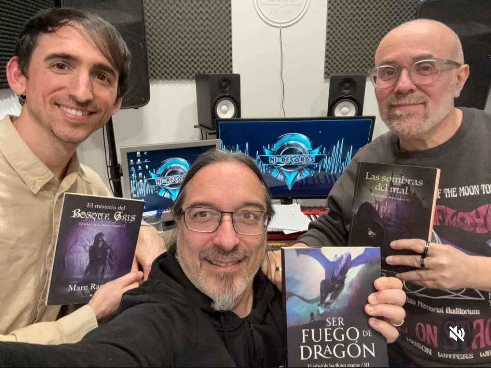
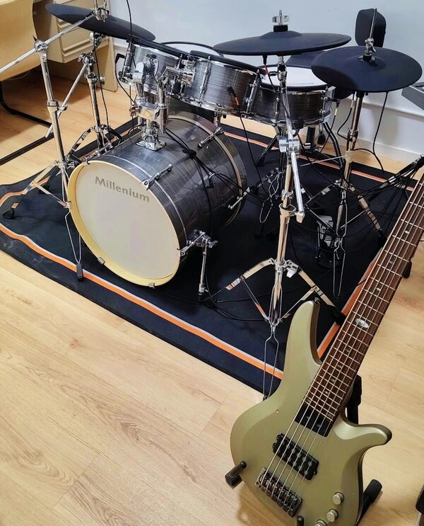

A veces las conexiones más inesperadas son las que terminan dando forma a algo nuevo.
Hace un año reconecté con mi profesor de inglés del colegio, Edmon. De esas personas que marcan una época y que, aunque los años pasen, cuando vuelves a hablar con ellas parece que no haya transcurrido ni un día.
Durante nuestro reencuentro le mencioné que había escrito una trilogía de fantasía. Para mi sorpresa, al poco tiempo me escribió para decirme que se la había empezado a leer. Y en cuestión de días, me dijo que la había devorado. Le había encantado.
Y entonces llegó la propuesta.
Edmon tiene una banda de rock-metal con su amigo Isaac. Ellos habían compuesto música para una famosa saga de fantasía basada en su historia, sus personajes y algunos momentos clave. Un proyecto hecho con cariño y dedicación. Me propusieron hacer lo mismo con mi trilogía.
No lo dudé ni un segundo.
Quedamos en su estudio de grabación. Pusieron su proyecto anterior y lo escuché con atención. Se notaba que había horas, esfuerzo, ganas e ilusión detrás de cada nota. Y lo que fue más importante: sentí que tenían unas ganas enormes de componer canciones para mi historia.

Ahora hace diez años que publiqué el primer libro de la trilogía. ¡Diez años! La idea de añadirle una banda sonora de metal épico me pareció perfecta. Tras más de un año también trabajando en el juego de mesa, ya sentía que volvía a surgir la creatividad. Todo girando alrededor del mismo universo, pero de formas muy distintas: narrativa, juego de mesa y música.
Para mí esto es mucho más que un proyecto musical. Es una oportunidad de aprender a escribir canciones. de revisitar la historia que escribí hace tantos años. De revivir momentos con los personajes y, sobre todo, desde los personajes. De verlos crecer en un formato nuevo, de sentir cómo resuenan sus emociones.

El Árbol de las Flores Negras está creciendo de formas que nunca imaginé. Pero, claro, nunca sabes cuándo tu profesor de inglés y su banda de metal van a tener unas ganas locas de ponerle música a tu historia.
Estoy deseando compartir lo que está por venir.